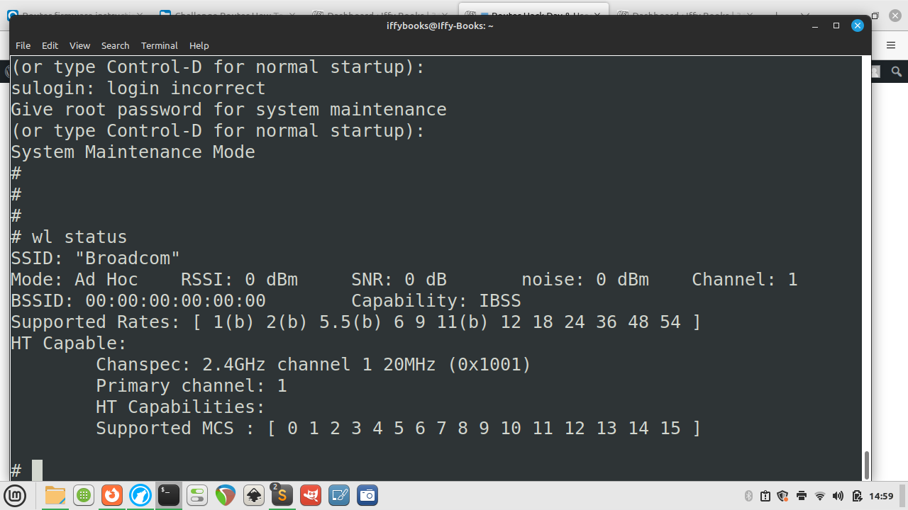
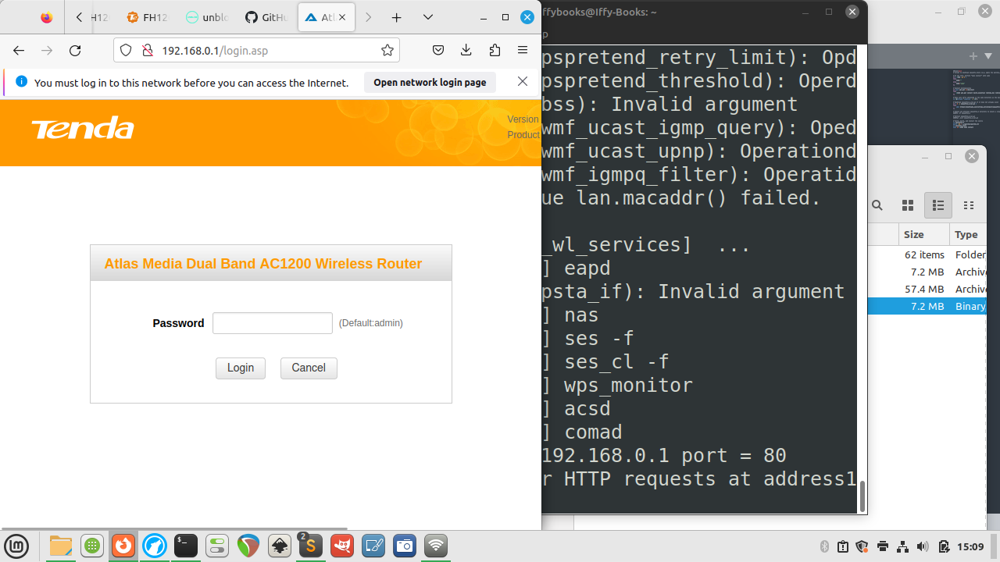
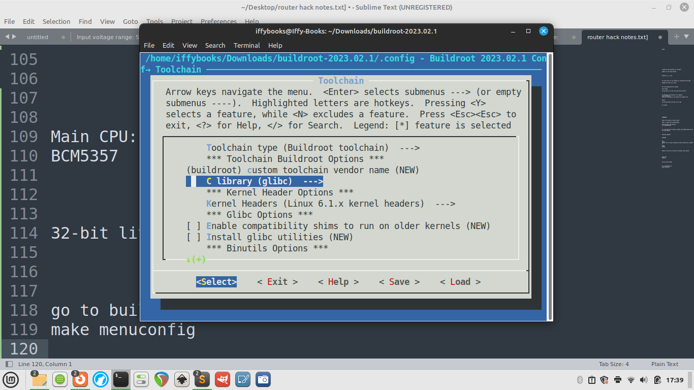
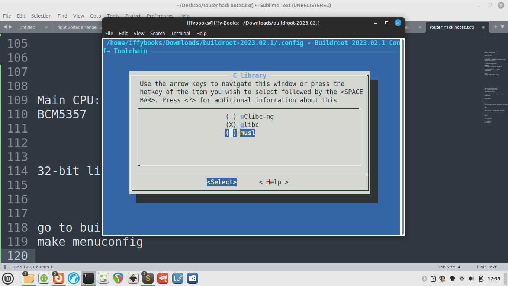
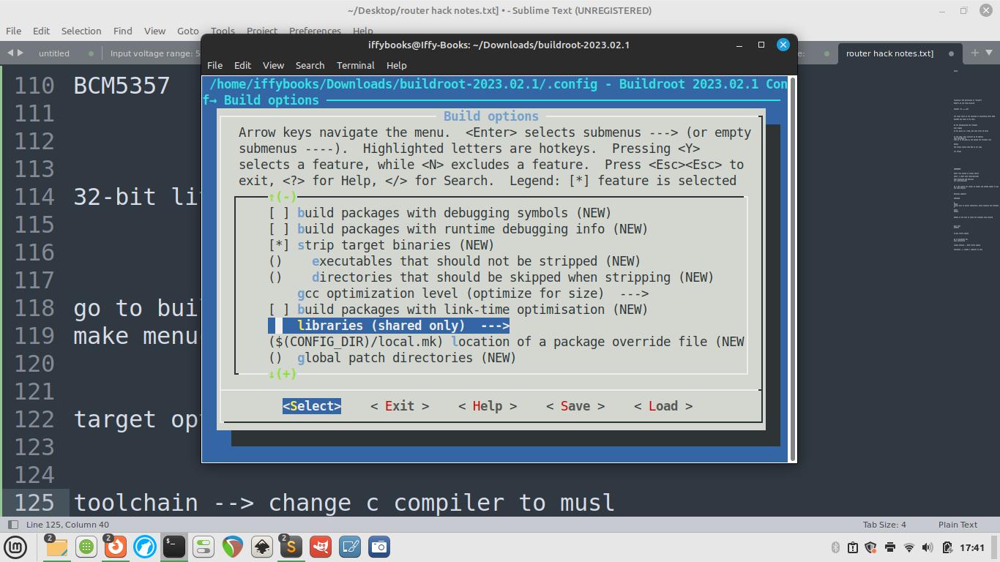

Saturday, June 24th, 2023
You can find this document online at the following URLs:
For the past few months, a handful of people in the Iffy Books community have been hacking away at a cheap Tenda router from 2016, simply because we have a lot of them. We’re selling the routers for $8 each at Iffy Books, and splitting the proceeds with Philly Community Wireless.
Our ultimate goal is to install open firmware such as OpenWrt or FreshTomato. We can’t install up-to-date releases, however, due to memory and storage limitations on the router. At this point in the project we’re still poking at the router’s firmware and figuring out what’s possible.
Here’s a previous post on decompressing the router firmware, and here’s a link to the notes and resources we used for our first Router Hack Day event in May.
This page is still a work in progress! We’ll be updating it during our Router Hack Day event on 6/24, including adding alt text. If you want to contribute, see the GitHub link above.
❏ Disassemble your router. You’ll need to remove a screw on the bottom, which is covered by a sticker.
❏ Cut the ends off three DuPont jumper wires, leaving port connectors on the other ends.
❏ Solder the stripped wires to the pinout terminals pictured below, located in the middle of the circuit board.

❏ Next you’ll connect the the three wires to your USB serial interface.
Connect the terminal labeled Tx in the image above to the pin labeled Rx on your USB serial interface.
Connect Rx from the router to Tx on the USB serial interface.
Connect GND to GND.

❏ Plug the USB serial interface into your computer.
❏ Plug in the router.
❏ Run the following command to see if your computer recognizes the USB serial device:
ls /dev/ttyUSB*If your computer recognizes the device, the output should look
something like /dev/ttyUSB0.
↳ If you don’t get any output, try running the following command to uninstall brltty. (It’s a program for interfacing with braille displays that’s been causing problems with this step.)
sudo apt-get autoremove brltty↳ If you’re still troubleshooting, you can run lsusb
and/or dmesg to get more info about your connected USB
devices. Or run the following command:
cat /proc/bus/usb/❏ Run the following command to install minicom:
sudo apt-get install minicom❏ Command for opening serial connection with your router:
minicom -D /dev/ttyUSB0 -c on❏ Press CTRL+A, then press O to open the configuration menu. Use the
arrow keys to select Serial port
setup.
❏ Press F to switch Hardware Flow Control to No.

❏ Press enter to close the serial port setup menu.
❏ To save this setting as your default, use the down arrow to select Save setup as dfl. Press enter to save.

❏ Use the arrow keys to select Exit, then press enter.
❏ Press enter once or twice and you’ll be prompted to log in. Use the login info below:
username: root
password: Fireitup
❏ Press tab twice in a row to see a list of available tools.
❏ Restart your router while the USB serial connector is attached and you’ll see a waterfall of interesting startup info:

❏ To get your router’s SSID name, use the command
wl status.

Here’s the stock firmware that comes with the router:
And here are two firmware releases from Tenda that work with the router. You’ll need to extract the files after downloading:
Tenda FH1201 Firmware V1.2.0.8_EN: https://www.tendacn.com/us/download/detail-2123.html
Tenda FH1206 Firmware V1.2.0.8(8155)_EN: https://www.tendacn.com/us/download/detail-2344.html
❏ Download the Tenda FH1206 firmware or your firmware of choice from the list above.
❏ Decompress the RAR files you downloaded from Tenda’s site, giving you a firmware file with a name like US_FH1206V1.0BR_V1.2.0.8(8155)_EN_TD.bin. If you don’t already have a program installed for decompressing RAR files, you can use one of the following:
MacOS: The Unarchiver https://theunarchiver.com
Windows: WinRAR https://www.win-rar.com
Linux: unrar https://linux.die.net/man/1/unrar
❏ Connect to your router’s network via wi-fi or Ethernet.
❏ Open your browser and go to 192.168.0.1 to access the
admin panel. Log in with the default password
admin.
❏ After loggin in, click Advanced and go to the Tools tab. Then click Firmware Update in the left column.
❏ Click the Browse button and select a firmware file. Then click Upgrade to start flashing the firmware to the router.

❏ If you want, you can open the serial shell to monitor the upload process.

❏ When the flashing process is done, connect to the router’s network
and go to 192.168.0.1 in your browser. You’ll notice the
admin panel looks slightly different compared to the stock firmware.

The easiest way to see what’s in the firmware is to decompress with unblob, using a Docker container to avoid dealing with dependencies. The downside of this approach is (compared to using unsquashfs, which we’ll introduce below) is that you can’t easily make edits and re-compress the firmware files.
❏ If you don’t have Docker installed, download and install it now: [https://docs.docker.com/get-docker/](https://docs.docker.com/get-docker/]](https://docs.docker.com/get-docker/)
❏ Create directories named input and output in the same directory, and cd to it.
mkdir -p ~/Documents/Router_firmware/input
mkdir -p ~/Documents/Router_firmware/output
cd ~/Documents/Router_firmware❏ Move your .bin firmware file to the input directory:

❏ Change the firmware filename to firmware.bin (optional; this is so the Docker command is the same for everyone):

❏ Open the Docker application; it may take a minute or so to launch. You’ll see a whale icon in your toolbar when it’s ready.
❏ Run this command to pull the latest unblob Docker image:
docker pull ghcr.io/onekey-sec/unblob:latest❏ Run the Docker command below to decompress your firmware file:
docker run --rm \
-v ./input:/data/input \
-v ./output:/data/output \
ghcr.io/onekey-sec/unblob:latest /data/input/firmware.binWhen it’s done, open the output directory and you’ll see a new directory called firmware.bin_extract that contains the decompressed firmware.

↳ If you get interrupted and want to start again, you’ll need to delete the firmware.bin_extract directory in output.
rm -rd ./output/firmware.bin_extractThese instructions are from Jim. Thanks, Jim!
❏ Clone the Sasquatch repo:
git clone https://github.com/devttys0/sasquatch.git❏ Then cd into the sasquatch directory.
❏ The README mentions this as a pre-req, so do this:
sudo apt-get install build-essential liblzma-dev liblzo2-dev zlib1g-dev❏ If you run ./build.sh at this point you will get a
bunch of errors related to xz_wrapper and LZMA. Eventually it ends in
something like this:
xz_wrapper.c:462:20: error: ‘LZMA_BUF_ERROR’ undeclared (first use in this function)
462 | } else if(res != LZMA_BUF_ERROR)
| ^~~~~~~~~~~~~~
xz_wrapper.c: In function ‘xz_uncompress’:
xz_wrapper.c:494:2: error: unknown type name ‘lzma_ret’
494 | lzma_ret res = lzma_stream_buffer_decode(&memlimit, 0, NULL,
| ^~~~~~~~
xz_wrapper.c:494:17: error: implicit declaration of function ‘lzma_stream_buffer_decode’ [-Werror=implicit-function-declaration]
494 | lzma_ret res = lzma_stream_buffer_decode(&memlimit, 0, NULL,
| ^~~~~~~~~~~~~~~~~~~~~~~~~
xz_wrapper.c:497:12: error: ‘LZMA_OK’ undeclared (first use in this function)
497 | if(res == LZMA_OK && size == (int) src_pos)
| ^~~~~~~
xz_wrapper.c:503:1: error: control reaches end of non-void function [-Werror=return-type]
503 | }
| ^
cc1: all warnings being treated as errors
make: *** [<builtin>: xz_wrapper.o] Error 1❏ Open the patch file in ./patches/patch0.txt and find
this section:
# To build using XZ Utils liblzma - install the library and uncomment
# the XZ_SUPPORT line below.
-#XZ_SUPPORT = 1
+XZ_SUPPORT = 1It will be around line 38087 of the 38726, so pretty close to the bottom of the file.
❏ Change the line from +XZ_SUPPORT = 1 to
+XZ_SUPPORT = 0
then run ./build.sh again.
This time it works successfully and end in something like this:
make[1]: Entering directory '/AC1200/sasquatch/squashfs4.3/squashfs-tools/LZMA/lzmadaptive/C/7zip/Compress/LZMA_Lib'
make[1]: Nothing to be done for 'all'.
make[1]: Leaving directory '/AC1200/sasquatch/squashfs4.3/squashfs-tools/LZMA/lzmadaptive/C/7zip/Compress/LZMA_Lib'
cc -g -O2 -I. -I./LZMA/lzma465/C -I./LZMA/lzmalt -I./LZMA/lzmadaptive/C/7zip/Compress/LZMA_Lib -D_FILE_OFFSET_BITS=64 -D_LARGEFILE_SOURCE -D_GNU_SOURCE -DCOMP_DEFAULT=\"gzip\" -Wall -Werror -DGZIP_SUPPORT -DLZMA_SUPPORT -DLZO_SUPPORT -DXATTR_SUPPORT -DXATTR_DEFAULT -c -o lzma_wrapper.o lzma_wrapper.c
g++ ./LZMA/lzmalt/*.o unsquashfs.o unsquash-1.o unsquash-2.o unsquash-3.o unsquash-4.o swap.o compressor.o unsquashfs_info.o gzip_wrapper.o lzma_wrapper.o ./LZMA/lzma465/C/Alloc.o ./LZMA/lzma465/C/LzFind.o ./LZMA/lzma465/C/LzmaDec.o ./LZMA/lzma465/C/LzmaEnc.o ./LZMA/lzma465/C/LzmaLib.o lzo_wrapper.o read_xattrs.o unsquashfs_xattr.o -lpthread -lm -lz -L./LZMA/lzmadaptive/C/7zip/Compress/LZMA_Lib -llzmalib -llzo2 -o sasquatch❏ Run the commands below to move the compiled sasquatch binary to your /usr/local/bin directory:
mkdir -p /usr/local/bin
cp sasquatch /usr/local/bin❏ Now when you run binwalk on the firmware dump file it will extract as expected:
binwalk -eM flash.bin❏ Now the squashfs-root directory contains the files from the router. Notably, check out the passwd and shadow files:
$ find . | egrep "passwd|shadow"
./squashfs-root/etc_ro/passwd
./squashfs-root/etc_ro/passwd_private
./squashfs-root/etc_ro/shadow
./squashfs-root/etc_ro/shadow_private
./squashfs-root/usr/bin/passwd
./squashfs-root/usr/sbin/chpasswd
./squashfs-root/var/etc/passwd
./squashfs-root/var/etc/passwd_private
./squashfs-root/var/etc/shadow
./squashfs-root/var/etc/shadow_private❏ Go to https://buildroot.org and click Download.
❏ Download and extract the package.
❏ cd to the directory you just created. Then run the
command make menuconfig.

❏ Go to Target options > Target Architecture and select MIPS (little endian).
❏ Go to Toolchain > Toolchain type and switch the C library to musl.


❏ Select Exit with the left and right arrow keys to go back to the main menu.
❏ Go to Build options and set libraries to shared only.

❏ Go to Target packages > Networking applications > enable tcpdump (press space).
❏ Go back to the main menu and select Save. Select OK and press enter.

❏ Select Exit to close the menuconfig tool.

❏ Run the command make tcpdump. It may take a while,
possibly 20 minutes or more.

❗️[At this point I’m getting errors I haven’t resolved yet. Stay tuned for an update.]
❏ Next you’ll run make.
40 hex bytes at a time, but skip first 40 bytes:
dd if=US_FH1201V1.0BR_V1.2.0.14(408)_EN_RD.bin of=data
bs=$((0x40)) skip=1❏ Open a serial shell session with your router (explained above).
❏ Unplug the router and plug it back in. While it turns on, press ctrl+C repeadly.
❏ If you do it right, you’ll be in CFE mode; if not, try again.
❏ Log in with the username root and password Fireitup.
❏ Enter CFE mode using the steps above.
❏ Plug your computer into the router with an Ethernet cable.
❏ Give yourself an IP address, like 192.168.1.X
(replacing X with a number)
❏ In your browser, go to 192.168.1.1 and upload a TRX
firmware file.
Wireless adapter: BCM43526
SOIC8: square next to serial connectors, which contains the firmware
SOIC: 25q64b
Main CPU: BCM5357
CH341 is the tool to flash the firmware chip itself.
Many thanks to Jim, [mbm], Anthony, Mattie, Steve, and everyone else who’s contributed to this project. (PRs welcome if your name belongs here.)
Part of the firmware is compressed with JFS2, and part of it uses TRX.
The TRX-formatted part starts with HR0 in all caps.
You can use BinDiff to compare firmware files.
❏ Mount file system in serial shell:
mount -t usbfs none /proc/bus/usb/Creating 8 MTD partitions on “sflash”:
[what’s on the flash device]
binwalk -Me firmware.bin
CRC value tells us the checksum of everything after HDR0.
OpenWRT has tools to do this.
❏ Show connected USB devices:
cat /proc/bus/usb/